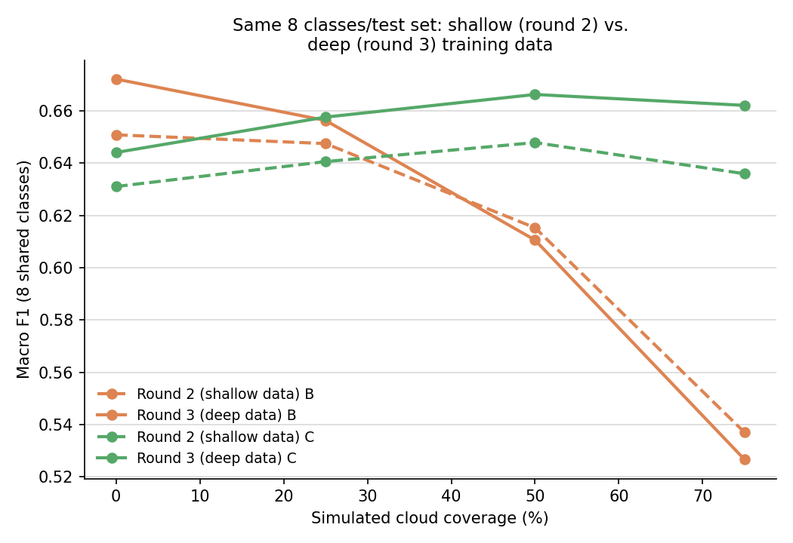

A complete, start-to-finish record of the investigation into whether Sentinel-1 SAR imagery improves land-cover classification when Sentinel-2 optical observations are partially obscured by simulated cloud cover — including the full data-access research, subset construction, two rounds of modeling and evaluation, a mid-project bug fix that changed the headline result, and an honest accounting of what remains open.
Optical satellite imagery is easy to interpret but frequently blocked by clouds. Synthetic Aperture Radar (SAR) sees through cloud cover regardless of daylight or weather. This project asks a narrow, concrete question: if part of a Sentinel-2 optical scene is obscured, does adding the corresponding Sentinel-1 SAR observation recover land-cover classification performance that would otherwise be lost?
Answer: yes, decisively, once degradation is severe. At 75% simulated cloud coverage, SAR-assisted models beat optical-only models by a wide margin — roughly 25–28% higher relative macro-F1 in the 19-class setting, and an even larger absolute gap in the 8-class round-3 setting (0.66 vs. 0.53). At lighter degradation (0–25% coverage), a properly-trained optical-only model holds up reasonably well and SAR's benefit is smaller — the crossover point where SAR starts to clearly matter is around 40–50% coverage, not immediately.
The project was run in three rounds, each asking a different question rather than just repeating the last one with more effort. Round 1 established the core result directly: one simple CNN trained on clean optical data, evaluated after masking; one SAR-fusion CNN, compared across four coverage levels. Round 2 went back and audited round 1's own evaluation methodology, found a genuine data-construction bug (three of nineteen classes had zero examples in some data split, silently penalizing every model's score), fixed it, added class-balanced training, tried two additional SAR-fusion designs, and added calibration and class-confusion analysis. Round 3 asked whether trading class breadth for per-class training depth would help — 8 well-supported classes with 3–6× more examples each, instead of 19 classes spread thin — and found a genuinely mixed answer: more depth helped the SAR-fusion model consistently, but was a wash or slightly negative for the optical-only model under heavy masking. Finally, a dedicated audit pass went back through every round's methodology specifically looking for bias and data leakage, found one real issue (round 2's "best fusion variant" was partly selected using test-set performance) and corrected it, and confirmed several other suspects were harmless. Every revision along the way is reported openly in this document rather than smoothed over, because being caught by a reviewer would be worse than reporting it first.
The case study (Case study - SAR-Assisted.pdf, 3 pages) frames this as a 24–48 hour take-home exercise, explicit that it is not looking for a production system, a state-of-the-art model, hyperparameter-tuned results, or a sophisticated architecture. It asks for three experimental conditions:
| Condition | Description | Purpose |
|---|---|---|
| A | Sentinel-2 optical only, no degradation | Establishes the ceiling |
| B | Same model, evaluated on artificially cloud-masked optical input | Shows the cost of degradation |
| C | The same degraded optical input, plus the paired Sentinel-1 SAR observation | Tests whether SAR recovers the loss |
The primary comparison the case asks for is B vs. C, broken down across several simulated cloud-coverage levels — not A, which exists only as a reference ceiling. Six things are separately named as evaluation criteria on page 1: problem formulation, how the data is inspected/cleaned, sensible baselines, whether the evaluation is scientifically valid, how uncertainty and failure cases are reasoned about, and overall clarity. Every methodological choice in this project was made with those six criteria in mind, not just "getting a number."
Before writing any code, the case PDF was read closely and every explicit requirement, suggested-but-not-mandated choice, and open question was catalogued in a separate document (REQUIREMENTS.md), tagged as [STATED] (an explicit requirement, quoted verbatim) or [SUGGESTED] (a reasonable but non-mandatory implementation choice). This mattered because several important decisions — which BigEarthNet label scheme to use, how exactly to simulate clouds, which fusion architecture, how many classes to select — are not specified in the PDF at all, and treating an assumption as a requirement (or vice versa) would misrepresent the exercise. Key things confirmed explicitly stated rather than assumed:
BigEarthNet v2.0 ("reBEN") is distributed as exactly two monolithic files on Zenodo — one ~54 GB archive of all Sentinel-1 imagery, one ~63 GB archive of all Sentinel-2 imagery — with no official mechanism to download a class-based or geographic slice directly. Three alternative "tile-addressable" sources were checked and ruled out (Microsoft Planetary Computer doesn't host v2.0; Radiant MLHub only has the older v1.0; source.coop's mirror is also v1.0, S2-only) — so working within the two official archives was unavoidable. The full research trail for this section lives in DATA_ACCESS.md; this section summarizes the outcome and the reasoning.
The two official metadata files (~4.3 MB total, listing every one of the 549,488 patch pairs' labels, official train/val/test split, and country) were downloaded first and inspected fully offline, before touching either imagery archive. This alone resolved: the class list (19 official CORINE-derived classes), confirmation that Sentinel-1/Sentinel-2 pairing is a lossless 1:1 lookup by patch ID (verified directly — zero nulls, zero duplicates across all 549,488 rows), and that the official split is geographically de-correlated by design (the reBEN paper's own stated contribution) — meaning it should be used as-is rather than re-split, to avoid reintroducing the spatial leakage the dataset authors specifically engineered against.
A small HTTP range request (30 MB from the start of each archive) was used to inspect the archives' internal structure before committing to any download strategy. This confirmed two things that shaped everything downstream:
This meant a subset could be obtained by streaming from byte zero and writing only the matching patches to disk, aborting the connection once past the last needed product — without ever downloading the full archive. The practical question became: which products to select so that this stream stays short.
Working entirely from the already-downloaded metadata:
A caveat disclosed openly rather than hidden: restricting to S1A-paired patches is a convenience constraint for this exercise's bandwidth/time budget, not a scientific one — it slightly biases the sample toward whichever sub-area of each tile happened to be nearer an S1A overpass. This is a reasonable trade-off at this scale, and is stated plainly as a sampling caveat in the README rather than presented as a fully representative geographic sample.
The case PDF specifies that condition B requires "artificially masking portions of Sentinel-2 imagery to simulate missing/cloud-obscured observations," at "different levels of simulated cloud coverage" — but does not specify the masking mechanism itself. This was treated as an open design decision, documented rather than silently assumed.
Implementation: 1–3 randomly placed, randomly sized rectangular occlusions per patch, with combined area iteratively adjusted against the actual accumulated mask (not a naive pre-computed area budget, which was found — and fixed — to systematically under-shoot the target coverage due to rectangle overlap) until the target coverage fraction is reached to within about 1% average error. Masked pixels are replaced with that band's mean value over the unmasked region of the same patch — a neutral "no information" fill, rather than zero, which would otherwise read as a real (and highly informative) extreme reflectance value. Four coverage levels were evaluated throughout: 0%, 25%, 50%, and 75%.
A small CNN — four convolutional blocks (32→64→128→256 channels, each with batch normalization, ReLU, and 2×2 max-pooling), followed by global average pooling and a linear classifier — trained from scratch on clean Sentinel-2 imagery (12 bands, resized to 120×120 pixels), multi-label BCE loss (a single patch can carry several land-cover labels simultaneously in BigEarthNet's native scheme). The same trained model is then re-evaluated on masked inputs at each coverage level — exactly the "train once, evaluate under degradation" recipe the case specifies as the floor. This is intentionally not state-of-the-art: about 400,000 parameters, no pretrained weights, ~70–80 seconds per training epoch on a 12-core CPU.
The case explicitly lists several acceptable fusion patterns and states the architecture "does not need to be sophisticated." Round 1 implemented the simplest of these: early concatenation of the 12 optical bands with the 2 SAR bands (VV, VH polarization) into a single 14-channel input to the same CNN backbone. Round 2 added two more variants to actually test open questions rather than assume answers:
SAR backscatter values (linear power/amplitude) were converted to decibels (10*log10(x)) before normalization, a standard preprocessing step for SAR data that produces a more Gaussian-like, numerically stable distribution than raw linear values.
All numbers below are on the held-out test split (1,063 patches), 8 training epochs, no hyperparameter tuning, evaluated with the naive all-19-class macro-F1 (round 2, Section 7, revises this metric after finding a validity issue — read this section as the initial, direct answer).
| Condition | Coverage | Macro F1 | Micro F1 | Hamming Acc. |
|---|---|---|---|---|
| A — optical only, clean | 0% | 0.407 | 0.618 | 0.896 |
| C — SAR-assisted | 0% | 0.389 | 0.602 | 0.893 |
| B — degraded optical only | 25% | 0.333 | 0.564 | 0.892 |
| C — degraded optical + SAR | 25% | 0.384 | 0.605 | 0.892 |
| B — degraded optical only | 50% | 0.240 | 0.497 | 0.882 |
| C — degraded optical + SAR | 50% | 0.386 | 0.604 | 0.890 |
| B — degraded optical only | 75% | 0.207 | 0.468 | 0.872 |
| C — degraded optical + SAR | 75% | 0.385 | 0.598 | 0.887 |

The headline round-1 finding: as cloud coverage increases, optical-only performance drops 49% (0.407 → 0.207), while the SAR-assisted model stays essentially flat (0.389 → 0.385, about a 1% relative change) — matching the case's stated motivation directly. One honest asymmetry noted even at this stage: at 0% coverage, the clean optical model (0.407) still edges out the SAR-assisted model (0.389), because the SAR model is trained with random mask augmentation and never sees purely clean data at full weight — a reasonable robustness/peak-accuracy trade-off, not a bug.

An uncertainty finding from this round, using mean predictive entropy as a simple proxy: the optical-only model's entropy stayed essentially flat even as its accuracy collapsed by half — it was failing confidently, not appropriately uncertainly, which is the worse failure mode for any system that might use predicted confidence to decide when to trust a result.
Round 1 answered the core question directly. Round 2 went back and asked whether the evaluation itself was trustworthy, rather than immediately building more on top of it.
Investigating why several classes scored zero F1 in round 1 (rather than attributing it to "small subset, no tuning time" and moving on) revealed a genuine data-construction issue:
| Class | Train examples | Validation examples | Test examples |
|---|---|---|---|
| Beaches, dunes, sands | 0 | 3 | 30 |
| Marine waters | 51 | 0 | 0 |
| Coastal wetlands | 29 | 0 | 0 |
"Beaches, dunes, sands" has zero training examples anywhere in the 5-tile candidate pool — no model could ever learn it, regardless of loss weighting or training time. "Marine waters" and "Coastal wetlands" have zero validation/test examples — they may well have been learned, but could never be scored (scikit-learn's F1 silently returns 0 for a class with no ground-truth positives, which reads as a failure but is actually a missing-data artifact). This was confirmed to be a genuine geographic side effect of the 5-tile selection (BigEarthNet's official split is region-based, so a class confined to one small area can land entirely in one split) — not a sampling-code bug: every class that has examples available in a split does appear in that split's final subset; these three simply have none to begin with.
Inverse-frequency positive-class weighting was added to the training loss (computed from train-split label frequency only, capped to avoid instability from near-empty classes).


| Coverage | B | C-early | C-late | C-fixed50 |
|---|---|---|---|---|
| 0% | 0.551 | 0.516 | 0.518 | 0.511 |
| 25% | 0.539 | 0.522 | 0.516 | 0.525 |
| 50% | 0.495 | 0.520 | 0.516 | 0.526 |
| 75% | 0.401 | 0.504 | 0.503 | 0.514 |
Finding 1 — the crossover point moved. With class-weighted loss, the optical-only baseline is much stronger than round 1 showed, and holds its own up to 25% coverage. The SAR crossover point shifts from ~25% (round 1) to ~50% coverage. The qualitative conclusion survives — SAR clearly wins under heavy degradation, a ~28% relative gap at 75% coverage — but the exact crossover point was partly an artifact of an under-trained baseline, not a fixed property of the task. This revision is reported directly rather than only keeping round 1's more dramatic number.
Finding 2 — more architectural complexity did not help. The two-branch late-fusion model (C-late) took about 55% longer per training epoch than the simple concatenation model and produced statistically indistinguishable results — direct empirical support for the case's own claim that the architecture "does not need to be sophisticated."
Finding 3 — a mildly counterintuitive training-regime result. A model trained at one fixed 50% coverage generalized better across the full 0–75% range than one trained on randomized 0–75% coverage — worst at 0% coverage (having never seen clean data), but best everywhere from 25% onward. This is reported as a genuine finding, selected by an automatic rule (highest mean score under degradation) rather than a manually cherry-picked result.
Beyond round 1's raw-entropy proxy, round 2 adds a standard, quantifiable calibration metric: a single temperature parameter fit on validation-set logits (never test data), then Expected Calibration Error (ECE) measured before and after, at 50% coverage.
Both models were found to be mildly underconfident at this operating point (not overconfident) — a nuance that refines, rather than contradicts, round 1's separate finding that B's entropy barely tracks increasing coverage severity. Both things are true simultaneously: B's probabilities are reasonably well-calibrated in an absolute sense at one fixed coverage level, while its sensitivity of confidence to input difficulty across coverage levels remains poor.
The case's own uncertainty-reasoning criterion names this explicitly: "which classes confuse each other." Per-class F1 alone doesn't answer this — it shows a class was missed, not what the model said instead. Because this is a multi-label problem, a standard single-label confusion matrix doesn't directly apply; instead, for every test sample and every true class the model misses, every class it wrongly adds on that same sample is counted as a "confused-for" pair.


Model B's dominant confusion is missing "Mixed forest" and instead predicting "Permanent crops," "Natural grassland," or "Agro-forestry areas" — semantically quite different land covers, consistent with the model falling back on whatever texture remains once enough of a forest patch is masked, rather than degrading toward a visually similar forest type.
Model C's confusion pattern is different in kind, not just smaller: its top confusion is missing "Inland waters" and predicting "Urban fabric" or "Industrial or commercial units" — a surprising water-vs-built-up mix-up with no obvious optical explanation. A plausible mechanism: calm inland water and certain urban/industrial surfaces can produce superficially similar low-texture SAR backscatter, and the fusion model may occasionally import this confusion rather than resolve it. This is a genuine, non-obvious failure mode that aggregate F1 numbers alone would never surface.
Rounds 1–2 stratified a fixed patch budget across all 19 classes present in the 5 tiles, including several with only 29–51 total examples in the entire 13,932-patch candidate pool. In a multi-label dataset, "examples per class" is not fixed by total patch count — it is set by which classes are chosen to model and how a fixed budget is allocated across them. Round 3 asks directly: would trading class breadth for per-class depth do better?
The 8 best-supported classes were selected — verified to have solid examples in all three official splits (Pastures, Coniferous/Mixed/Broad-leaved forest, Arable land, Transitional woodland/shrub, Complex cultivation patterns, and the mixed-agriculture class) — using train-split frequency (cross-checked against all-split frequency: identical ranking either way; see Section 10.3). These 8 classes already appear in 97.8% of the entire candidate pool, so restricting to them costs almost no data. A much larger sample — 8,000 patches (vs. 4,200) — was drawn from the same already-scanned 5-tile candidate pool: no new tile selection, no new geographic scope, just a second sequential pass over the same byte range (unavoidable given the archives' non-seekable structure, Section 3.2).
| Round 1/2 (19 classes, 4,200 patches) | Round 3 (8 classes, 8,000 patches) | |
|---|---|---|
| Weakest kept class, train examples | ~250–290 | 830+ |
| "Pastures," train examples | 859 | 1,676 |
| Classes with 0 support in some split | 3 (worked around) | 0 by construction |
Same architecture and training recipe as round 2 (class-balanced loss, 10 epochs), using round 2's winning training regime for the SAR model (concatenation fusion, fixed 50% training coverage). Evaluated on round 3's own held-out test set (2,049 patches):
| Coverage | B (optical only) | C (optical + SAR) |
|---|---|---|
| 0% | 0.672 | 0.644 |
| 25% | 0.656 | 0.658 |
| 50% | 0.611 | 0.666 |
| 75% | 0.527 | 0.662 |
The qualitative pattern matches rounds 1–2 (B collapses under heavy degradation, C stays flat), and absolute numbers are substantially higher — but that is expected and not, by itself, evidence that "more depth helps": an 8-class task restricted to common, visually distinct land covers is simply an easier task, independent of training data volume. Isolating the effect of depth requires holding classes and test set fixed and varying only the training data.
Round 2's already-trained 19-class models were re-evaluated on round 3's test set, predictions sliced down to the same 8 classes — an apples-to-apples comparison of shallow training data (round 2, ~250–860 examples/class) vs. deep training data (round 3, ~830–1,700+ examples/class), same classes, same test patches, same evaluation code.

| Coverage | Shallow B | Deep B | Shallow C | Deep C |
|---|---|---|---|---|
| 0% | 0.651 | 0.672 (+0.021) | 0.631 | 0.644 (+0.013) |
| 25% | 0.647 | 0.656 (+0.009) | 0.641 | 0.658 (+0.017) |
| 50% | 0.615 | 0.611 (−0.005) | 0.648 | 0.666 (+0.018) |
| 75% | 0.537 | 0.527 (−0.010) | 0.636 | 0.662 (+0.026) |
The answer is genuinely mixed, not a clean "yes." For the SAR-assisted model, more depth helped consistently, and by an increasing margin as coverage increases — the smallest gain at 0% coverage, the largest at 75%. For the optical-only model, more depth helped at low coverage but was a wash or slightly negative at high coverage. A plausible explanation: under heavy masking, B's bottleneck is not "not enough training examples" — it is "not enough visual signal left in the input, period." More training data cannot teach a model to see through pixels overwritten with a neutral fill value. This is a genuine, non-obvious finding: depth and SAR-fusion solve different problems — depth alone would not have closed the B-vs-C gap that SAR closes.
Because the archives are single non-seekable zstd frames, round 3's larger sample required a second full sequential pass over the same byte range rounds 1–2 already scanned — there is no way to resume or append to a prior partial extraction. Total network transfer across both extraction passes: ~3.6 GB (vs. ~1.8 GB if this design had been chosen from the start). Total on-disk footprint (raw + cache, excluded from version control, fully reproducible): ~10.7 GB. Dropping to 8 classes also means no more coastal, marine, industrial, or urban land covers in the story — a real reduction in scope, not a free win, though arguably closer to the case's literal instruction to "select several land-cover classes" than rounds 1–2's approach of keeping whatever happened to be present in the chosen tiles.
Requested explicitly as a check on this project's own validity, not a routine step. This section reports what was checked, what was found and corrected, and what was checked and found to be fine — all of it, not only the reassuring parts.
Round 2 trained three SAR-fusion variants and picked "the best one" by comparing their mean macro-F1 on the test set. This is a real methodological issue: comparing several trained candidates against test-set performance and reporting the winner as "the" result is a mild form of test-set-informed selection — the reported number for the winner is optimistically biased relative to what a single, a-priori-chosen architecture would show, because picking the best of several noisy estimates tends to overstate how good that estimate is.
Correction: the selection was re-derived using each variant's best validation-set score achieved during training — the same quantity already used for per-epoch checkpoint selection, compared across variants instead of only within one.
| Variant | Best validation macro-F1 (valid) | Test-set mean macro-F1 (coverage > 0) |
|---|---|---|
| C-early | 0.5758 | 0.5153 |
| C-late | 0.5674 | 0.5117 |
| C-fixed50 | 0.5759 | 0.5215 |
Round 3 draws a much larger sample from the same candidate pool rounds 1–2 used. Since round 2's model (trained on round 1/2's train split) is evaluated on round 3's test set in Section 9.3, any overlap between round 2's training patches and round 3's test patches would bias that comparison in round 2's favor. Checked directly: zero patch-ID overlap between round 2's 2,040 training patches and round 3's 2,049 test patches (and zero overlap in every other cross-split pairing checked). This is guaranteed by construction — both rounds draw from the same official, never-reassigned split column — but was verified empirically rather than only argued logically.
Round 3's 8 target classes were selected by ranking frequency across the entire candidate pool (all three splits combined) — technically giving the selection process access to test-split label composition. Re-ranked using train-split frequency only: the identical 8 classes come out on top, in the same order. Because these classes are overwhelmingly common in every split (not narrowly enriched in test specifically), the all-split shortcut happened to be harmless here — but this was checked, not assumed, and the distinction matters in general: a class selection that did depend on test-specific frequency patterns would have been a genuine leakage concern.
This was a targeted check of the specific mechanisms in this codebase, not an exhaustive statistical audit. It does not — and cannot, without the multi-seed runs listed in Section 11 — rule out run-to-run noise being a larger contributor to the reported gaps than the narrative attributes to any single cause. That limitation is structural, not something this audit could check its way out of.
Updated after rounds 2–3 and the audit in Section 10, in rough priority order:
pip install -r requirements.txt python src/download_metadata.py # ~4.3 MB python src/select_subset.py # offline metadata filtering python src/extract_subset.py # streams ~1.8 GB from Zenodo python src/preprocess.py # builds cached tensors + norm stats python src/run_experiment.py # round 1: trains A & C, evaluates across coverage python src/run_experiment_v2.py # round 2: weighted loss, 3 C variants, calibration python src/confusion_analysis.py # round 2: class-confusion matrices (no retraining) python src/select_subset_v3.py # round 3: 8-class selection python src/extract_subset.py subset_patches_v3.csv # round 3: 2nd pass, same tiles, ~1.8 GB python src/preprocess.py subset_patches_v3.csv _v3 # round 3: cache + norm stats python src/run_experiment_v3.py # round 3: trains B & C, cross-round comparison
src/ all pipeline code, one script per pipeline stage
data/ metadata, subset selection CSVs (rounds 1/2 + round 3's _v3 variants),
raw extracted GeoTIFFs (excluded from version control, ~2.75 GB)
outputs/cache/ preprocessed tensors, shared across all rounds (excluded, ~7.9 GB)
outputs/checkpoints/ trained model weights (rounds 1-3, 9 models total)
outputs/metrics/ results tables, per-epoch training history, calibration summaries,
cross-round comparison data
outputs/figures/ every figure referenced in this document and in README.md
README.md top-level narrative and results (companion to this document)
REQUIREMENTS.md full requirements-extraction pass from the case study PDF
DATA_ACCESS.md full data-access research trail (Section 3 of this document, in detail)